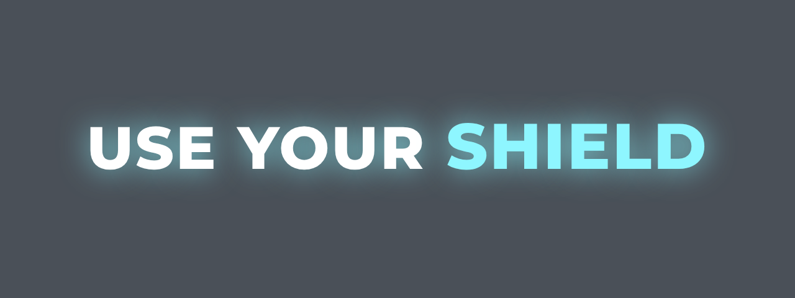
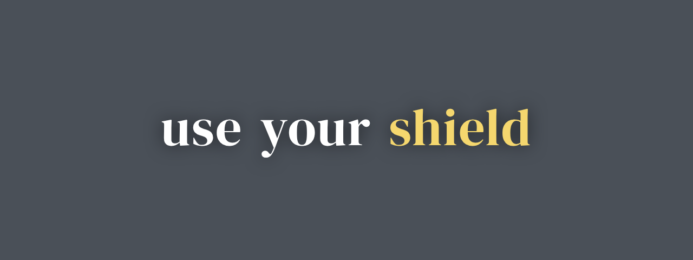

Animated captions inside Premiere Pro and After Effects. Transcribe on your computer, choose a style and keep editing the result: graphics on your Premiere timeline or caption layers in your After Effects composition.
Premiere Pro timeline illustration. In After Effects, captions are layers in your composition.
The editor behind Captions Gen
I'm a video editor, and I built Captions Gen for editors who want animated captions in Premiere Pro and After Effects.
Both panels use the same local speech engine and caption styles. You can work in your Premiere sequence or your After Effects composition without sending footage away for transcription.
The current release is free, without a watermark or transcription time cap. Try a short clip in the Adobe app you use, and email me if you have a question or feedback.
The same caption tools in Premiere Pro and After Effects, with output that belongs in each app. Install one panel or both.
Use a color swap, a larger spoken word or a moving pill background. The local transcript supplies word timing; review the words and highlights before exporting.
Premiere gets Motion Graphics clips. After Effects gets native caption layers in your composition. Correct text, adjust timing and use Apply style to change the look.
Both panels use Faster Whisper on your CPU. They share one engine and Models folder, so missing speech models download once and are cached. Audio and video aren't uploaded for transcription.
Edit on the timeline
Select a clip with speech, choose a preset and generate editable Motion Graphics clips above it. Use Premiere's Properties panel to edit the placed graphics.
Open Window > UXP Plugins > Captions Gen. Requires Premiere Pro 25.6 or newer on supported 64-bit Windows 10 or 11.
Work in your composition
Select an audio or video layer with speech, choose a preset and generate native editable caption layers in the composition. The panel's Captions tab lets you edit the caption text.
Open Window > Extensions > Captions Gen. Tested with After Effects 2026 on Windows 11; earlier After Effects versions aren't certified for this release.
Free After Effects plugin, examples and requirements · Installation guide
18 built-in presets for both panels, from bold karaoke and comic looks to calmer podcast and subtitle designs. Change the font, size, stroke, shadow, highlight and animation, then save your own preset.

Glow
Serif StoryCaption design examples, rather than screenshots of either Adobe app. Bundled fonts provide the preset fallbacks; installed fonts can affect the final look. Review it in your sequence or composition.
Try the 1.1.9 workflow for Premiere Pro and After Effects. Pick a style, generate prepared sample captions and edit their words. Everything here runs in your browser; your media and Adobe apps stay untouched.
Premiere Pro places editable caption graphics in your sequence.
Once setup and the first model downloads are complete, the workflow is the same in both panels: select your speech, choose a look and generate.
Select a timeline clip in Premiere Pro, or an audio/video layer in your After Effects composition.
Choose one of the 18 presets or customize your own. Preview the highlight, font and animation before placement.
Speech is transcribed on your CPU. Premiere receives editable graphics; After Effects receives native caption layers. Review the words and timing.
Change the design with Apply style without transcribing again. After editing caption text, select the changed captions and use Update animation when offered, then check playback. In After Effects, you can also edit text in the panel's Captions tab. See editing and timing details.
The result stays editable in the project and renders into the picture at export. For SRT, selectable subtitles or closed captions, keep a separate native caption workflow. See the output limits.
I want editors to be able to add animated captions without another bill. The current free release includes both Adobe panels, local transcription, karaoke highlights, the built-in presets and the live preview.
Current pricing, compatibility and product facts. Adobe Premiere Pro and After Effects are separate paid applications. Paid features are planned for the future.
Bought a license before? Thank you for the early support. Your key stays active.
Start in your Adobe app, then check the shared speech models, editable-caption workflow and delivery limits. Native Premiere subtitle tracks have their own guides.
Install the panel, generate editable graphics and compare them with Premiere's native subtitle tracks.
See editable caption examples, the current free offer and Windows compatibility. Then follow the setup guide.
Correct words in the Captions tab and check the timing after a text change.
Choose one word at a time or a phrase with a moving spoken-word highlight.
Find a missing panel, unsupported speech source or invisible caption layers.
Base, Small and Turbo use the same local engine in both panels. Check storage and processing expectations.
Keep placed captions editable and review highlights after changing their words.
Check native track visibility, timing, appearance and export settings.
Use a native caption track when delivery needs selectable subtitles or a separate caption file.
Check the supported Adobe versions, Windows requirements, free download and public release limits.
Preview the 18 presets and customize a look before installing either Adobe panel.
One Windows installer for Premiere Pro, After Effects, or Both. Check the requirements for the app you choose, then allow time for the first speech-model downloads.
Keep Creative Cloud Desktop installed and complete Adobe's installation prompts. The full Windows setup installs the selected panels and their shared engine.
No plugin account or license key is needed. The two panels share the engine and Models folder. For an existing installation, see the current update notes.
Premiere Pro and After Effects use the same local CPU engine. Transcription time depends on your processor, model and audio length; preview and export also depend on the Adobe project.
The shared engine downloads missing built-in models, then reuses the cached files in either app. Initial downloads take extra time. Search supported spoken languages in Settings or assign a compatible custom model. Language selection transcribes the speech; it doesn't translate it.
Transcription happens before captions are placed. After that, each caption is an animated graphic or layer that your Adobe app evaluates during playback and export. Many captions or complex styles can make timeline playback heavier.
A few practical details before you try it.
I'm Kris, a video editor and the creator of Captions Gen. I built Captions Gen to give other editors animated captions for free in Premiere Pro and After Effects. You can email me with questions or feedback.
Yes. Captions Gen is currently free for Premiere Pro 25.6 or newer on 64-bit Windows, with no time limit, watermark or subscription. It creates animated, word-by-word captions as editable graphics using local transcription. Download the installer directly. No email address or payment card is required. Adobe Premiere Pro is a separate paid application. Paid features are planned for the future.
Yes. The current Captions Gen Windows release includes an After Effects panel, tested with After Effects 2026 on Windows 11. It transcribes locally on the CPU and creates native editable caption layers in your composition. It's currently free without a watermark or transcription time cap. No email address or payment card is required to download; After Effects is a separate paid Adobe application. Earlier After Effects versions aren't certified for this release.
Yes. Both panels offer word-by-word highlights with color swaps, highlight size and pill backgrounds. Choose a preset, generate from the speech, then review its word timing. Premiere receives editable Motion Graphics clips; After Effects receives native caption layers.
Your footage is not uploaded for transcription. Captions Gen transcribes locally on your CPU with Faster Whisper. The engine downloads missing speech models when it starts and keeps them for later use. Model downloads, update checks and legacy license checks use the internet.
Premiere Pro 25.6 or newer on supported 64-bit Windows 10 or 11. After Effects has been tested with After Effects 2026 on Windows 11; earlier After Effects versions are not certified for this release. Creative Cloud Desktop and Adobe installation permissions are required. Install either panel or both with the same Windows setup. Premiere versions before 25.6 are not supported. This public release does not include a Mac installer.
No. Both panels use the CPU for Faster Whisper transcription, without GPU acceleration. A dedicated GPU isn't required for transcription itself. Your computer must still meet the processor, memory and GPU requirements of the Adobe app you use, with memory available for the speech model.
Choose Base in Settings for the lightest built-in model. Small offers another balance of processing time and quality; Turbo is the default quality setting and the largest built-in model. Try a short clip and review accuracy and word timing. Speed depends on your processor, selected model and audio length.
Allow at least 3 GB free for the built-in speech models, in addition to the plugin, Adobe apps and project files. The engine downloads missing Base, Small and Turbo models and caches them for either panel to use. Installing both panels doesn't require separate copies of the models. Model sizes can change, and custom models need additional space.
You can make similar bold highlights, pill backgrounds and pop or bounce animations using Captions Gen's own presets. They remain editable in your Premiere sequence or After Effects composition. The designs aren't exact copies of every CapCut template, and the animation becomes part of the picture when you export the video.
The current Windows release is free for both panels, with no transcription time cap, watermark or subscription. No email address or payment card is required to download. Premiere Pro and After Effects are separate paid Adobe applications. Paid Captions Gen features are planned for the future.
Thank you for supporting Captions Gen early. Your key stays active.
Yes. Edit the Motion Graphics in Premiere's Properties panel, or use the Captions tab in the After Effects panel. Select edited Captions Gen captions and use Update animation when it appears. Available word timings are retained, and new words can be timed against the original audio. If timing must be estimated, the panel tells you. Review playback after edits. Apply style changes the look without transcribing again. This doesn't convert native subtitle tracks.
Search supported spoken languages in Settings, or use Auto-detect. You can assign a compatible custom speech model to a language. Spoken language describes the audio being transcribed; it does not translate the video.
Premiere evaluates the placed graphics, and After Effects evaluates the caption layers in the composition. Many captions or complex styles can make preview and export heavier. Finish the main edit first, then review a short section after timing and styling. Premiere sequence previews can help with heavier playback. Export time depends on the project and hardware.
Yes. Choose Both in the 1.1.9 Windows setup, or choose just the app you need. Both panels share the local transcription engine and Models folder. No plugin account or second set of model downloads is needed. Each Adobe app keeps its own project and generated captions.
No. Captions Gen creates editable Motion Graphics clips in Premiere and native editable caption layers in After Effects. Highlights, backgrounds and animations render into the picture. For an SRT sidecar, selectable subtitles or broadcast closed captions, use a separate native caption workflow, such as Premiere's caption tracks. Captions Gen doesn't convert those tracks or translate speech in this public release.
This public release is for Windows. It does not include a Mac installer.